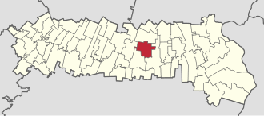
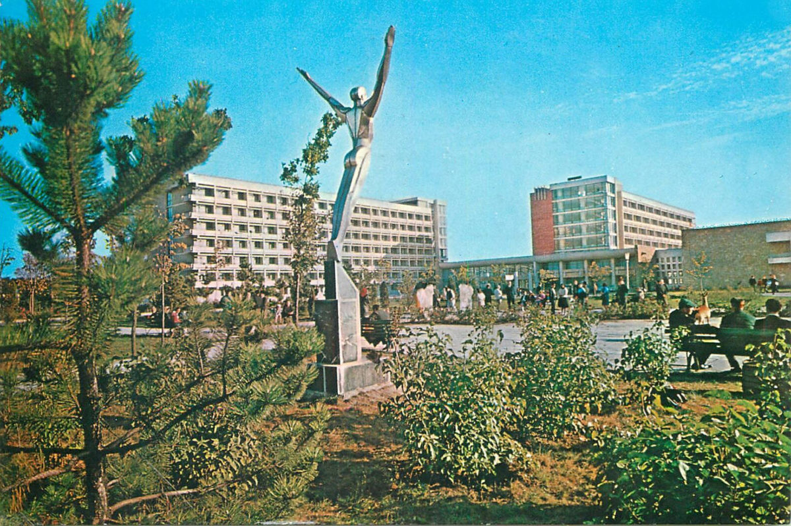
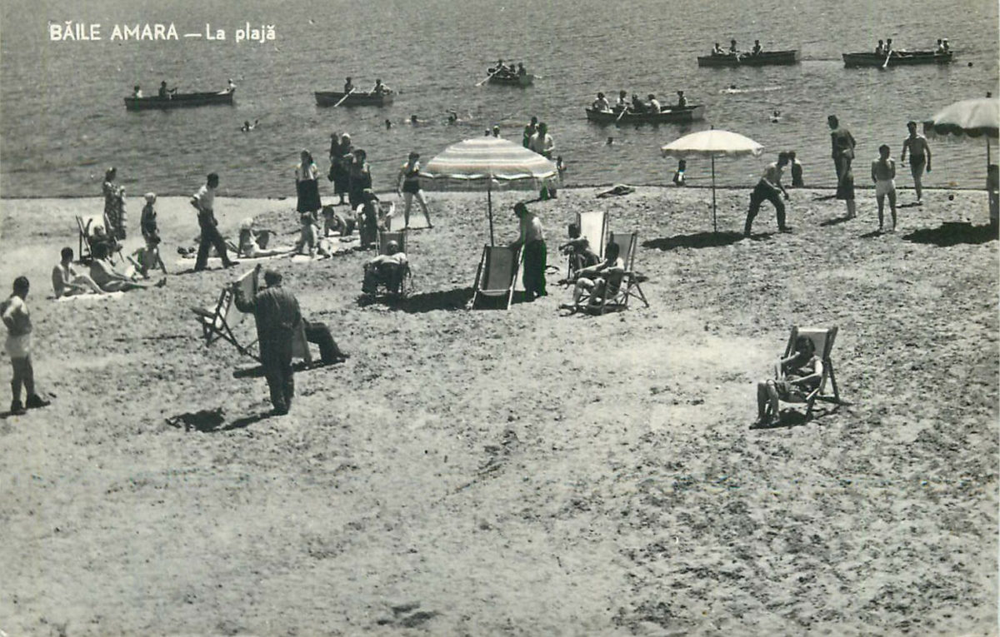

Date generale
Localizare
Orașul Amara este situat în partea de sud-est a României, în județul Ialomița, în regiunea istorică Muntenia. Se află la aproximativ 7 kilometri nord de municipiul Slobozia, reședința județului, și la aproximativ 130 de kilometri est față de București, capitala țării.
Din punct de vedere geografic, Amara este amplasat în Câmpia Bărăganului, o subunitate a Câmpiei Române, caracterizată printr-un relief de șes. Orașul este traversat de drumuri județene  care îl leagă eficient de Slobozia și de alte localități din județ. În imediata apropiere se află Lacul Amara, o zonă de interes natural și punct de reper pe harta județului. Coordonatele sale geografice sunt aproximativ 44°38′ latitudine nordică și 27°21′ longitudine estică, ceea ce îl plasează într-o poziție accesibilă în centrul sud-estic al țării.
Demografie
Conform recensământului din 2021, Amara avea o populație de 6.805 locuitori, în scădere cu 7,35% față de 2011, când erau înregistrați 7.345 de locuitori. Această scădere reflectă tendințele demografice din multe orașe mici din România.
Distribuția pe grupe de vârstă arată că segmentul 40–49 de ani este cel mai numeros, cu 1.096 de persoane (16,11%). În schimb, copiii între 0–9 ani reprezintă doar 9,01% din populație, sub media națională de 10,4%, indicând o populație în proces de îmbătrânire.
Din punct de vedere etnic, majoritatea covârșitoare a locuitorilor sunt români (87,69%), urmați de romi (0,31%) și ruși-lipoveni (0,04%). Religia predominantă este ortodoxă, cu 85,8% din populație, urmată de penticostali (0,57%) și adventiști de ziua a șaptea (0,18%).
Administrație și politică locală
În anul 2025, administrația locală a orașului Amara, sub conducerea primarului Valentin Moraru, desfășoară o serie de proiecte ambițioase menite să sprijine dezvoltarea economică, turistică și socială a orașului. Una dintre prioritățile principale este preluarea administrării Lacului Amara, o resursă naturală valoroasă cu potențial terapeutic și turistic semnificativ. Demersurile în acest sens sunt avansate, iar scopul este valorificarea eficientă și sustenabilă a nămolului sapropelic.
Pe lângă proiectele legate de turism, administrația locală investește în infrastructura educațională. Se derulează lucrări de eficientizare energetică la Grădinița „Prichindel” și la Școala „George Vâlsan”, pentru a reduce costurile și a oferi elevilor condiții moderne de studiu.
Totodată, sunt în curs de implementare proiecte importante pentru modernizarea zonei turistice, cum ar fi reabilitarea Zonei 4 din Complexul Balnear Plaja Zorilor și amenajarea Plajei Perla, cu scopul de a atrage un număr mai mare de turiști și de a stimula economia locală. În plan urbanistic, se lucrează la asfaltarea a aproximativ 3 kilometri de drumuri, pentru a îmbunătăți infrastructura rutieră și accesibilitatea în oraș.
Prin toate aceste inițiative, administrația orașului Amara urmărește modernizarea orașului, creșterea calității vieții locuitorilor și consolidarea statutului său de stațiune balneară cu potențial regional.
Află ce își propune conducerea locală pentru viitorul orașului Amara, vizionând acest interviu cu actualul primar, Valentin Moraru:
Istorie
 Orașul Amara, situat în județul Ialomița, are o istorie îndelungată care se întinde pe mai multe secole, fiind influențată de diverse evenimente și evoluții sociale, economice și culturale din regiunea Muntenia. Primele dovezi ale existenței localității datează din perioada antică, când zona era locuită de triburi geto-dacice. De-a lungul timpului, această regiune a fost un punct de tranzit important pe drumul dintre sudul și nordul țării. În evul mediu, zona în care se află acum Amara a fost parte din Țara Românească, iar documentele istorice menționează localitatea sub diverse forme de-a lungul secolelor. Amara, ca multe alte localități din sudul țării, a fost afectată de invaziile din perioada medievală, dar și de luptele pentru unificarea Țării Românești.
Un punct de cotitură în istoria orașului a avut loc în perioada modernă, când Amara a început să se dezvolte datorită resurselor naturale din zonă. De-a lungul sec. XIX și începutul sec. XX, a avut loc o intensificare a activităților economice, în special datorită potențialului balnear  al zonei. Lacul Amara, cunoscut pentru proprietățile sale terapeutice, a contribuit la dezvoltarea stațiunii balneare și atragerea vizitatorilor din diferite colțuri ale țării. În perioada interbelică și în timpul regimului comunist, orașul a cunoscut o dezvoltare semnificativă, iar infrastructura locală a fost îmbunătățită, devenind un punct de atracție și o destinație pentru tratamente balneare. După 1989, orașul a continuat să își conserve tradițiile și să se modernizeze, având astăzi o comunitate activă și o infrastructură bine pusă la punct.
Astăzi, Amara este cunoscută nu doar pentru resursele naturale, ci și pentru istoria sa bogată, care reflectă evoluția unei localități ce a traversat multe perioade istorice. Cu o tradiție de ospitalitate și un caracter aparte, orașul continuă să își păstreze identitatea în pofida schimbărilor moderne.
Cadru natural
Orașul Amara este situat în județul Ialomița, în sud-estul României, într-o regiune caracterizată printr-un cadru natural deosebit, ce include un relief de câmpie, zone umede și o biodiversitate bogată. Amplasat pe malul Lacului Amara, acest oraș beneficiază de un peisaj natural care combină câmpurile fertile ale Bărăganului cu speciile de floră și faună adaptate condițiilor de stepă și apă sărată.
Relieful și geografia localității
Orașul Amara este situat într-o regiune de câmpie, parte a Câmpiei Bărăganului, o unitate de teren din sudul României, caracterizată prin terenuri joase și deluroase. Această câmpie este una dintre cele mai mari din țară și se întinde pe județele Ialomița, Călărași și Constanța. Relieful joasă, predominant plat, influențează nu doar peisajul vizual, ci și clima și ecosistemele din zonă.
În apropiere, Lacul Amara este o caracteristică semnificativă a regiunii. Lacul salin, care se întinde pe o suprafață considerabilă, atrage atât turiștii, cât și o varietate de specii de păsări și plante halofile. De asemenea, peisajul este punctat de mici coline și bălți care fac parte din rețeaua hidrografică ce adăpostește o faună specifică.
Flora
Flora regiunii Amara este caracteristică zonei de câmpie și include specii de plante adaptate atât la condițiile de secetă, cât și la solurile cu salinitate crescută. Zona lacului găzduiește plante halofile, care sunt rezistente la salinitatea apei, precum ierburi sărate și sălcii. De asemenea, vegetația de pe câmpiile din jur este dominată de graminee și specii de plante erbacee, cum ar fi festuca, bromus și poa, care formează pajiștile naturale.
În pădurile de salcâm și ulm, întâlnite la marginea orașului, se regăsesc specii de arbori adaptate la condițiile de câmpie, care pot rezista în fața vânturilor puternice și a temperaturilor extreme. Aceste păduri sunt adăpost pentru numeroase specii de plante și animale, dar și o resursă valoroasă pentru comunitățile locale.
Fauna
Fauna orașului Amara este destul de diversificată, avându-și rădăcinile în ecosistemele câmpiilor și ale zonelor umede din jurul lacului. Lacul Amara joacă un rol esențial în oferirea unui habitat pentru o mare varietate de păsări, fiind un loc de migrație important. Printre speciile de păsări care populează zona se numără rațele sălbatice, stilturile cu picior lung și cormoranii, dar și specii rare de egretă și stiltul cu picior roșu. Aceste păsări se adăpostesc pe malurile lacului și în pădurile din jurul său.
În regiunile mai uscate, de stepă, trăiesc mamifere mici, cum ar fi iepurii, dihanele, și diverse specii de rozătoare. Zona este și un habitat pentru carnivore mai mari, precum vulpile și mistreții, care își găsesc adăpost în pădurile din apropiere.
Diverse reptile, cum sunt șopârlele și șerpii, sunt și ele prezente în regiune, în special în zonele mai izolate și în apropierea lacului. În plus, zona umedă este populată de insecte acvatice, cum sunt libelulele și țânțarii, care contribuie la biodiversitatea locului.
Clima
Clima din Amara este temperat-continentală, caracteristică regiunilor de câmpie din sud-estul României. Vara, temperaturile pot depăși frecvent 30°C, iar iarna, temperaturile pot scădea sub -10°C, cu ninsori moderate și vânturi reci. Regiunea se confruntă cu o variabilitate mare a precipitațiilor, iar sezonul de vară este adesea secetos.
În timpul iernii, vânturile reci dinspre nord și est aduc condiții meteorologice riguroase, cu temperaturi scăzute și zăpezi ce se pot menține pe termen lung. Această climă influențează atât vegetația, care trebuie să fie adaptată la temperaturi extreme, cât și faună, care se retrage adesea în zonele mai protejate ale pădurilor și lacurilor.
Importanța ecologică și protecția mediului
Lacul Amara și zonele umede din apropierea orașului sunt esențiale pentru menținerea biodiversității în această regiune a României. Aceste ecosisteme acvatice oferă un refugiu pentru multe specii de păsări și plante rare, făcând din zona Amara un loc valoros din punct de vedere ecologic. Din acest motiv, autoritățile locale și organizațiile ecologice au implementat măsuri pentru protejarea mediului înconjurător și pentru promovarea turismului ecologic.
De asemenea, peisajele naturale și biodiversitatea din jurul orașului Amara sunt esențiale pentru turismul ecologic din regiune. Pădurile, lacul și pajiștile sunt locuri de relaxare și observare a naturii, atrăgând vizitatori din diverse colțuri ale țării și nu numai.
Turism
Evenimente
Formular de consultare publică
Acest formular are scopul de a contribui la îmbunătățirea și dezvoltarea orașului nostru. Prin completarea lui, cetățenii și vizitatorii pot transmite întrebări, propuneri, sugestii sau idei legate de problemele comunității, inițiative noi, modernizarea infrastructurii, protecția mediului sau orice alt aspect care ar putea face orașul un loc mai bun pentru toți.
Contact
Contactează-ne la:
Email: consiliullocalamara@yahoo.comTelefon: +40 243 266 102
Mobil: +40 731 326 014